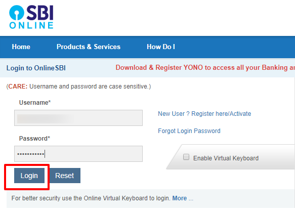
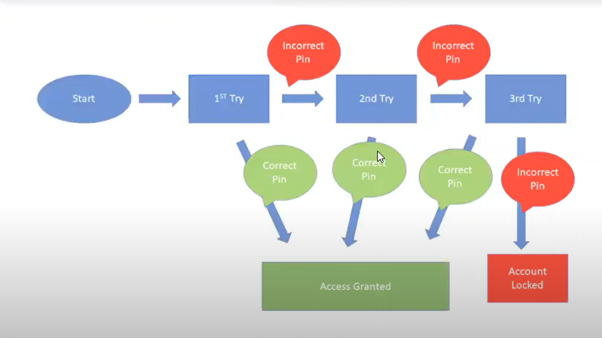

STATE TRANSITION TESTING
State Transition Testing is a black box testing technique in which changes made in input conditions cause state changes or output changes in the Application under Test. State transition testing helps to analyze behaviour of an application for different input conditions.
- State-Transition testing is the one of the black box testing & desing techniques which can be used to derive test cases (or) test for the application functions which go through several states
APPLICATION FUNCTIONALITIES
SEVERAL STATES
For example let us look in to net banking software
when you visit a site you can see a login details

now you can see the above login page now if you enter the login details and login if the password is wrong it give 2nd time to enter the correct if you enter the correct password you can access the site but if you again enter the wrong password at the 2nd time it gives 3rd chance to enter the correct password in 3rd time if you enter the wrong password the access will be locked and its shows your accoungt is locked
WRONG PASSWORD
WRONG PASSWORD
WRONG PASSWORD
ACCOUNT LOCKED

for the 4th try it will be blocked the access
and you can't able to acces the data on that site this is the state transition testing